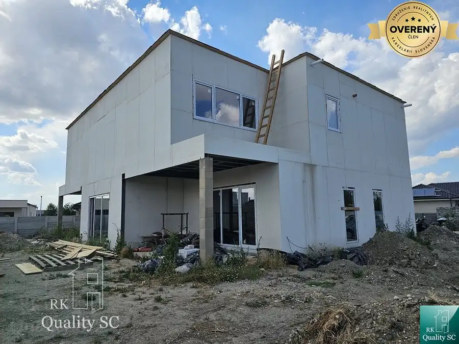
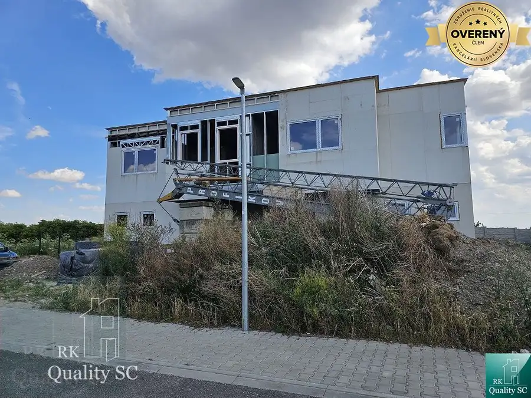
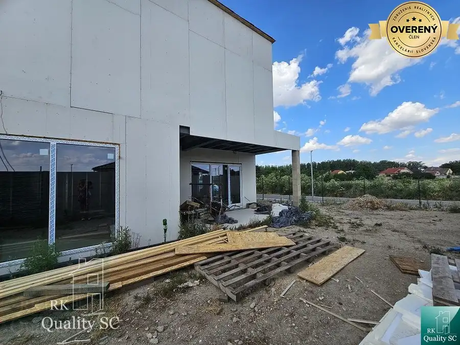
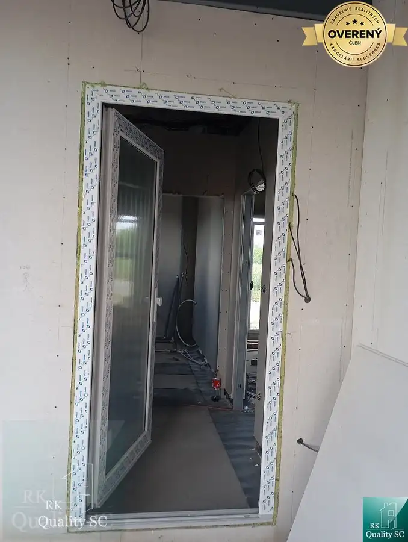
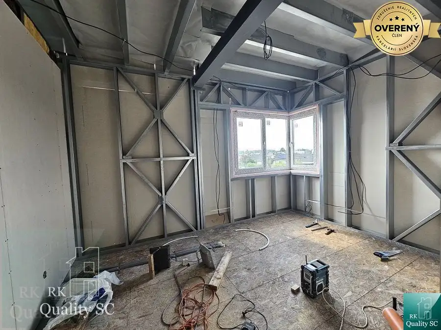
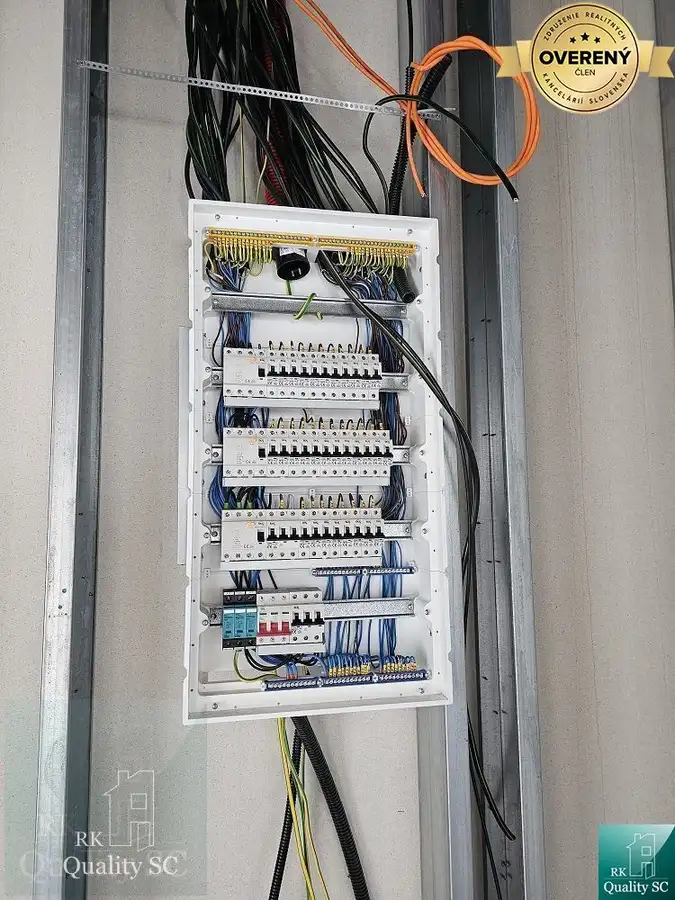
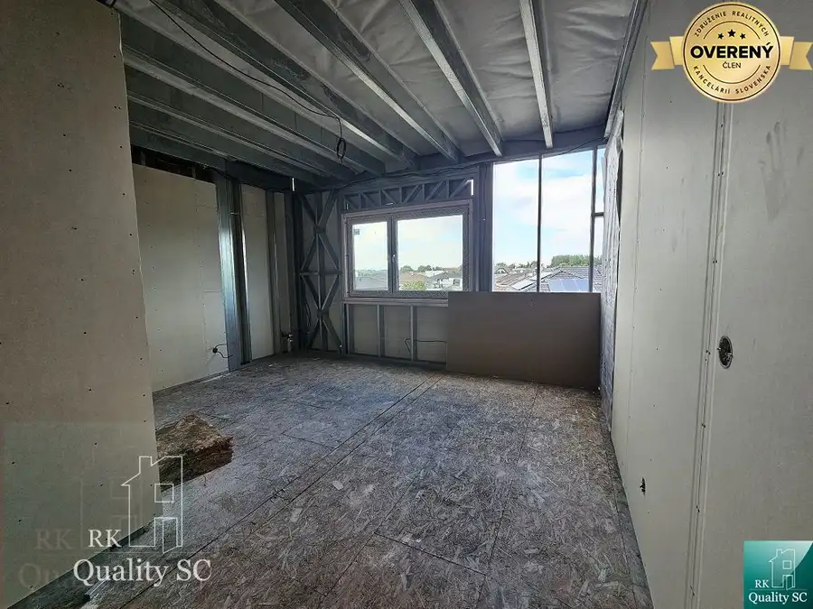
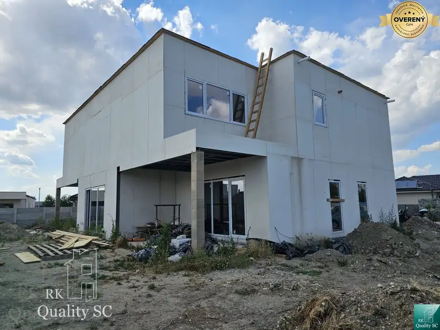
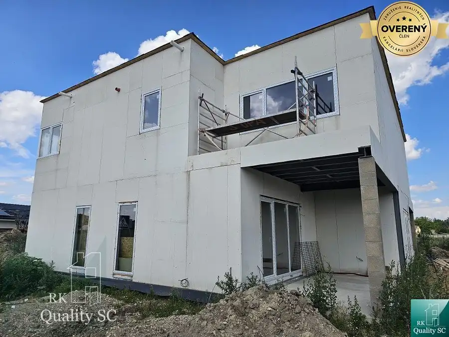

TOMÁŠOV - Okr. Senec - EXKLUZÍVNE NA PREDAJ NOVOSTAVBA - dva 4 izb. b
Senec








- Dispozícia4-izbový
- Plocha128 m²
- Stavnedokončený
- Vlastníctvofiremné
O nehnuteľnosti
Lokalita: obec Tomášov, ul. Okružná.
RK Quality SC Vám prináša ponuku na predaj - dvoch 4 izbových bytov v rodinnom dome (dvojdom) - poschodový, montovaný dom na kľúč. Celý dom (obe bytové jednotky) stojí na pozemku o výmere 747 m2, ÚP jedného bytu v dome je 128 m2 (plus cca 31 m2).
Dispozičné riešenie domu:
- prízemie: vstupná chodba, samostatná toaleta, technická miestnosť, kuchyňa spojená s obyvačkou, z ktorej je východ na terasu (spomínaných cca 31 m2), schodisko na poschodie,
- poschodie: chodba, 2x samostatná izba (spálne), kúpeľňa a druhé samostatné WC, ďalšia spálňa so šatníkom a vlastnou kúpeľňou.
Predpokladaný termín dokončenia domu je jeseň 2026. Teplo v dome budú zabezpečovať slnečné kolektory a solárne panely (fotovoltika).
IS: mestská voda, elektrina, kanalizácia, internet. Parkovanie na pozemku.
Tento moderný 4i RD s vlastným pozemkom, ponúka presne to, čo vyhľadáva čoraz viac ľudí, pokoj, súkromie, zdravé prostredie a finančne rozumné bývanie. Vďaka modernej montovanej technológii a solárnym panelom, získate nie len komfort, ale aj nižšie prevádzkové náklady.
Zdravá vnútorná klíma, kvalitné izolačné vlastnosti a dostatok prirodzeného svetla, vytvárajú prostredie, v ktorom sa budete cítiť doma dobre.
Obec Tomášov, ponúka kompletnú občiansku vybavenosť: MŠ, ZŠ, Zdravotné stredisko, lekáreň, pošta, potraviny, reštaurácie, športoviská. Výhodou je aj pravidelné autobusové spojenie a rýchla dostupnosť do BA (cca 15 min autom).
Domov je pocit bezpečia, pokoja a istoty. A možno práve tu, nájdete ten svoj.
Ak Vás nehnuteľnosť zaujala, neváhajte ma kontaktovať. Rada Vám dom ukážem.
Cena nehnuteľnosti: 299 000€ (aj na HÚ).
Kontakt: Lenka Rajniaková, RK Quality SC, mobil , pevná linka , mail:
Zvyšujeme kvalitu služieb v našej Realitke Qualitke, bez zvýšenia našej odmeny:
• poskytujeme najvyššiu právnu ochranu pre svojich klientov formou autorizovaných Kúpnych zmlúv našou advokátkou
• podávame konania na kataster elektronicky (kratšia lehota na povolenie vkladov - namiesto do 30 kal. dní bude vklad povolený do 20 kal. dní pri štandardnom konaní a do 15 kal. dní pri zrýchlenom konaní)
• platíme všetky náklady súvisiace s autorizáciou Kúpnych zmlúv, s overením totožnosti predávajúcich (netreba chodiť k notárovi, či na matriku, pri autorizovaní KZ sa v našej kancelárii overia podpisy predávajúcich) a s povolením vkladu vlastníckeho práva na katastri (správne poplatky)
• Rezervačné zmluvy podpisujeme digitálne/online cez SIGNI (šetríme Váš čas, energiu, pohonné hmoty, parkovné…)
• „NÁŠMU KUPUJÚCEMU GARANTUJEME VRÁTENIE REZERVAČNÉHO POPLATKU V PLNEJ VÝŠKE V PRÍPADE, KEĎ MU NEZABEZPEČÍME FINANCOVANIE NEHNUTEĽNOSTI Z NAŠEJ PONUKY PROSTREDNÍCTVOM NÁŠHO HYPOPORADCU
• plus ďalšie benefity pre Vás
ZABEZPEČÍME VÁM VÝHODNÚ HYPOTÉKU A DOFINANCOVANIE TEJTO NEHNUTEĽNOSTI - ZDARMA (pretože nášho hypoporadcu platia banky) A PROMPTNE - vybavte všetko na jednom mieste, rýchlejšie a lacnejšie ako kdekoľvek inde. U NÁS NEPLATÍTE NÁKLADY ZA ZNALECKÝ POSUDOK A OSTATNÉ POPLATKY, ak využijete služby nášho hypoporadcu.
Navštíviť nás môžete osobne na adrese:
RK Quality SC, Lichnerova 25, 903 01 Senec - na pešej zóne - v obchodnom centre KOCKA (na prízemí - hneď pri ČSOB).
Parametre
- Rozloha pozemku
- 747 m²
- Zastavaná plocha
- 206 m²
- Úžitková plocha
- 128 m²
- Počet izieb
- 4
- Vlastníctvo
- firemné
- Stav
- nedokončený
- Status
- aktívne
- Internet
- iné
- Postavené z
- Montované
- Terén
- rovina
- Dátum zverejnenia
- 2026-09-13
Kde to je
Mohlo by Vás zaujímať

Rodinné domyNové 299 000 €Okr. SeAnec - TOMÁŠOV - EXKLUZÍVNE NA PREDAJ NOVOSTAVBA - dva 4 izb. b Tomášov 4-izbový128 m² BytNové
299 000 €Okr. Senec - TOMÁŠOV - EXKLUZÍVNE NA PREDAJ NOVOSTAVBA - dva 4 izb. by
Tomášov
4-izbový128 m²1. podlažie
BytNové
299 000 €Okr. Senec - TOMÁŠOV - EXKLUZÍVNE NA PREDAJ NOVOSTAVBA - dva 4 izb. by
Tomášov
4-izbový128 m²1. podlažie

BytNové 299 000 €Okr. Senec - TOMÁŠOV - EXKLUZÍVNE NA PREDAJ NOVOSTAVBA - dva 4 izb. by Senec 4-izbový128 m²1. podlažie